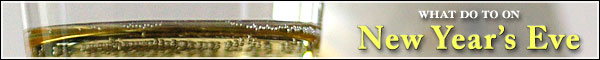

Bring it on, 2007
 New Year’s Eve is Sunday, December 31. How will you ring in the new year? If you’re like us, it seems like it’s always a pain in the ass to find something to do on the last night of the year. Partying at the neighbor’s place, bar-hopping on Sixth Street, drinking a bottle of Boone’s Farm Strawberry Hill alone and crying yourself to sleep – decisions, decisions. Luckily, with the help of our friends at Austin Tidbits, we’ve compiled this list of stuff to do around Austin on New Year’s Eve.
New Year’s Eve is Sunday, December 31. How will you ring in the new year? If you’re like us, it seems like it’s always a pain in the ass to find something to do on the last night of the year. Partying at the neighbor’s place, bar-hopping on Sixth Street, drinking a bottle of Boone’s Farm Strawberry Hill alone and crying yourself to sleep – decisions, decisions. Luckily, with the help of our friends at Austin Tidbits, we’ve compiled this list of stuff to do around Austin on New Year’s Eve.
First Night Austin
| Related Links |
|---|
Family-friendly, all-day celebration of the visual arts
On Sunday, December 31, 2006, you’re invited to play a creative role in transforming downtown Austin. The stage will be the city’s plazas, parks, streets, storefronts, and building facades. Indoor venues will be settings for a palette of performing and visual arts.
First Night Austin is a public celebration of the arts that revives the ancient tradition of marking the passage of time with art, ritual, and festivity. It is a family-friendly, affordable, and alcohol free New Year’s Eve festival. Join us on December 31st and help create a new tradition for Austin that celebrates the culturally rich and artistically diverse place we call home.
Live music? In Austin? What?
| Related links |
|---|
Emo’s NYE triple threat TOP Pick
Emo’s (“The Best Club in the World”) is hosting Austin’s best New Year’s music show. THREE acts will be playing simultaneously – and they’re all amazing. The Octopus Project, Starlight Mints, and Black Lipstick grace the outdoor stage; psychobilly reigns supreme when The Flametrick Subs (with Satan’s Cheerleaders) and The Hotrod Hillbillies pack Emo’s indoor stage with what appears to be a Pompadours Anonymous meeting. Meanwhile, IV Thieves and Moonlight Towers (with DJs from both bands) will play in the lounge.
Show @ 9:30pm | doors @ 8pm (outdoor stage)
Show @ 10pm | doors @ 8pm (indoor stage and lounge)
Emo’s website
| Related Links |
|---|
Rollerskating New Year’s Party featuring KTel Hit Machine’s Electric Light Orchestra with the Tosca String Quartet
Kitsch alert! This Alamo Drafthouse Rolling Roadshow is rich in fortified minerals – namely IRONY. Ticket price includes up to six drink tickers, an appetizer buffet, and skating from 9–11pm. When the skating ends, the rink will be transformed into a giant dance floor as KTel’s Electric Light Orchestra take the stage. 70’s disco attire is “suggested but not required.”
Tickets: $50 | show @ 9pm
Tip: Buy tickets online in advance!
KTel/ELO Rollerskating New Year’s Party
What about Bob?
Ring in 2007 with the soulful stylings of Austin’s favorite heartthrob, Bob Schneider, at Antone’s.
Tickets: $30-35 | show @ 9pm | doors @ 8pm
Antone’s website
| Related Links |
|---|
Give a hoot: Pollute
Party with Urban Pollution at The Mohawk and enjoy live music on both the indoor and outdoor stages. Loxsly, Jonathan Meiberg, A Hawk and a Hacksaw, Belaire, Evangelicals, and The Blow perform.
Cover: $10 at the door | show @ 9pm
The Mohawk and Urban Pollution present: New Year’s Extravaganza!
Spaz out
Shake it up at Cedar Street Courtyard and rock out with The Spazmatics as the clock strikes midnight.
Cover: $40
Tip: Tickets are going FAST!
Cedar Street’s website
Calling all foodies
| Related Link |
|---|
Keith & Margo’s Murder Mystery Midnight Madness
Whodunit? Mr. Mustard in the library with a candlestick, of course. This “interactive mystery comedy” at the Omni Austin Hotel Southpark includes a four-course dinner, DJ, and dancing. This is a classy place, so dress as if you care how you look.
Basic package (show, dinner, dancing, tax, and gratuities): $140 per person
Deluxe package (same as Basic, plus a guest room and breakfast): $382 per couple
Both packages are inclusive and non-refundable
Keith & Margo’s Murder Mystery Midnight Madness
Jezebel of the ball
If you’re looking for an intimate atmosphere, enjoy your last dinner of the year with a gourmet meal at Restaurant Jezebel.
Seatings: 6pm is $85/person | 9pm is $145/person
Restaurant Jezebel’s NYE menu
Galas (rich people only, please)
Barton Creek Resort and Spa
Do you buy and sell real estate? Does your income consist primarily of capital gains? Do you stop partying at 1am? Then we’ve got just the thing for you! Dinner, dancing, and a toast at midnight. The Jacque Vilmain Group performs. Then everybody goes to sleep on mattresses filled with money.
Rates begin at $240 | 7pm–1am
Barton Creek Resort & Spa


Recent comments